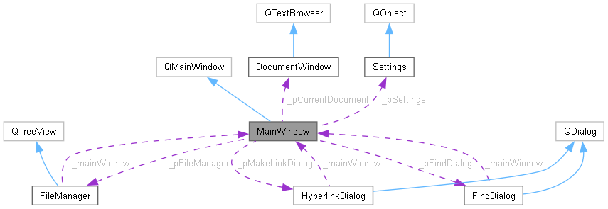

Гипертекстовый редактор

Курс: Командная разработка
Команда 2
Гипертекстовый редактор - программа для создания и редактирования материалов с гипертекстовой разметкой удобной для создания справочных систем для программного обеспечения.
Выполнен как курсовой проект Команды 2 факультета Гикбрейнс "Разработка на С++" по предмету "Командная разработка"
Документация
Диаграмма классов
